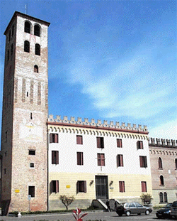

Palazzo Tiso, attualmente sede municipale, costituiva originariamente la dimora dei feudatari e parte integrante di un castello medioevale dotato di un sistema fortificato, di cui nulla rimane. Venne costruito nel 1085 per volere di Tiso III e Gherardo II Da Camposampiero. Di aspetto severo e maestoso, l’edificio attuale è il risultato dalle numerose modifiche apportate nel corso dei secoli. In origine era attrezzato con porte munite di torri, circondato da una cintura di fossa ricavata dallo sdoppiamento del fiume Vandura e reso più sicuro da argini, ponti levatoi, catene di sbarramento e mura. Il recinto interno, avente forma di quadrato con gli angoli smussati, comprendeva, oltre alla rocca, il campo di Marte, depositi, caserme e poche abitazioni. La facciata attuale è divisa in due zone distinte: quella inferiore con riproduzione a lastroni di pietra; quella superiore scandita da ampie aperture sormontata da una serie di archetti pensili acuti, su cui si posa un coronamento, risalente all’inizio del secolo scorso, che imita la merlatura medioevale.
L’eco degli importanti avvenimenti di cui Palazzo Tiso fu testimone nei secoli risuona ancora distinto nella Torre Civica che svetta al suo fianco. È alta trentadue metri ed ha una pianta quadrata leggermente irregolare (metri 6.00 x 6,50). Oltre a mattoni d’argilla, per la sua costruzione venne utilizzato abbondante materiale di ripiego. Intorno al 1600 venne adattata la parte superiore. La bella campana bronzea, risalente al 1556 ora sostituita da una copia, è conservata e visibile all’interno di Palazzo Tiso. Da notare, sul lato sud, una meridiana policroma con scritta latina, due stemmi d’epoca veneziana e, quasi alla sommità, un dipinto di Fulvio Pendini del 1962, raffigurante una Madonna con Bambino
